はじめに
Oracle Cloud Infrastructure Exadata Database Service on Dedicated Infrastructure (ExaDB-D) では、VMクラスタ上で作成するデータベースのバージョンを指定したり、ユーザーの個別の用途や要求に合わせるようにカスタム・イメージを作成して指定することを簡単に行うことが可能です。この章ではデータベース・ホームおよびカスタム・イメージの作成方法について紹介します。
目次 :
前提条件 :
- 101 : ExaDB-Dを使おうを通じてExaDB-Dの作成が完了していること
所要時間 : 約30分 ※環境によって異なるため、参考値です。
1. データベース・ホームの作成
-
OCIコンソール・メニューから Oracle Database → Oracle Public Cloud上のExadata に移動します。

-
利用したいコンパートメントをリスト範囲のコンパートメントから選択します。

-
利用したいリージョンを右上のリージョンの折りたたみメニューをクリックして、リージョンの一覧から選択します。

-
操作したいExadata VMクラスタの表示名をクリックします。
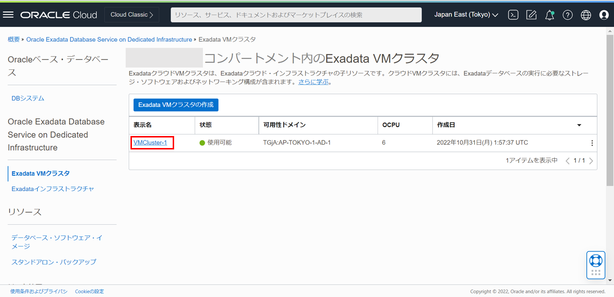
-
リソースの一覧からデータベース・ホームをクリックします。
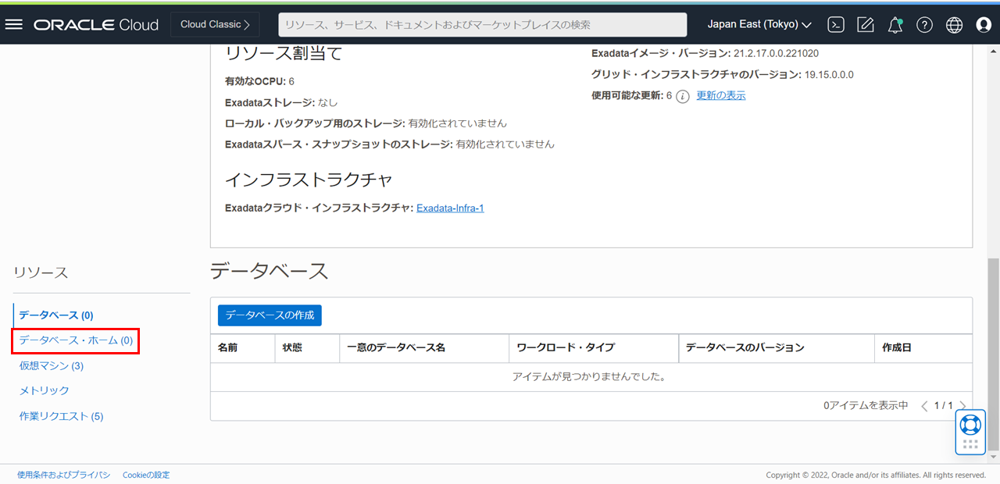
-
データベース・ホームの作成をクリックします。
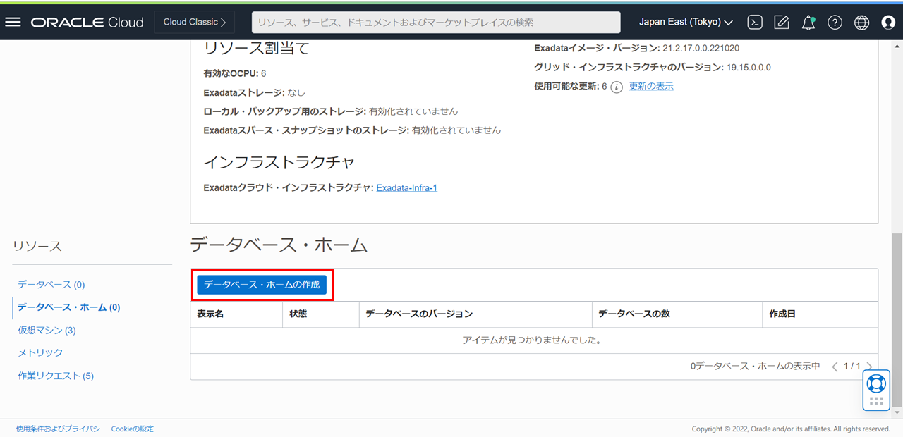
-
データベース・ホームの作成ダイアログで以下の操作を行います。
データベース・ホームの表示名に任意の名前を入力します。
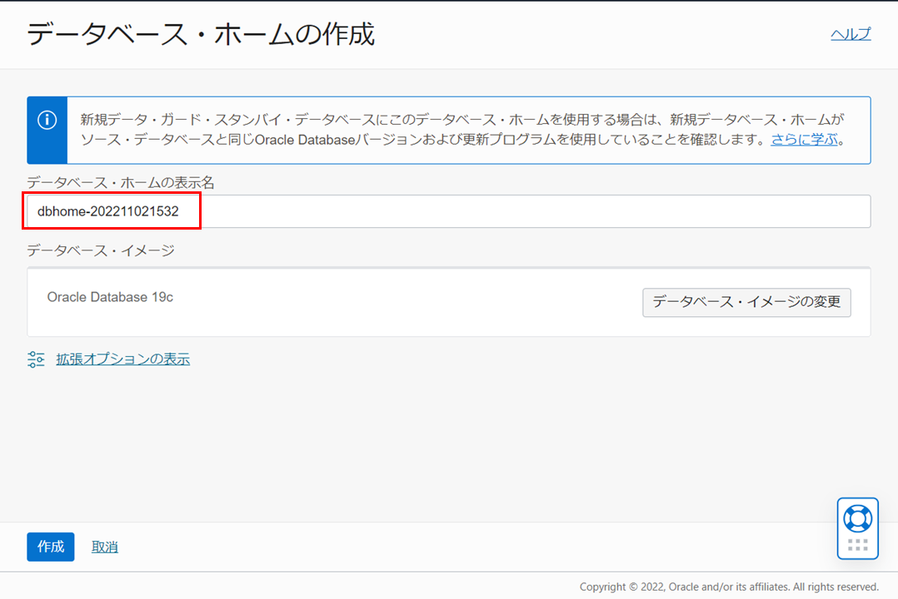
データベース・イメージの変更をクリックします。
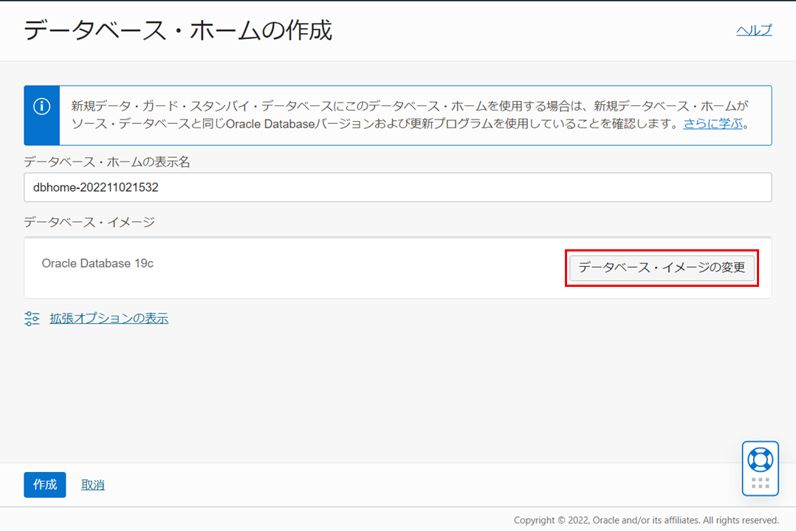
-
イメージ・タイプはOracle Databaseソフトウェア・イメージを選択します。
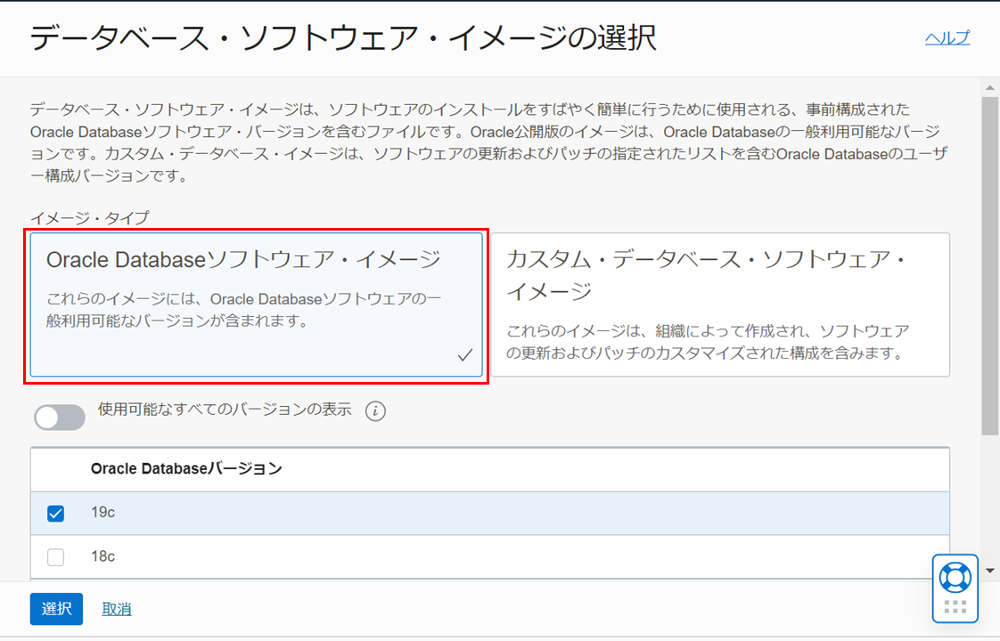
使用可能なすべてのバージョンの表示の横のボタンをクリックすると、Oracle Databaseのバージョンとして、最新と直近3つ前(N-3)までのバージョンから選択できます。作成したいバージョンを選択して、選択をクリックします。（本ガイドでは、19.17.0.0を選択します。）
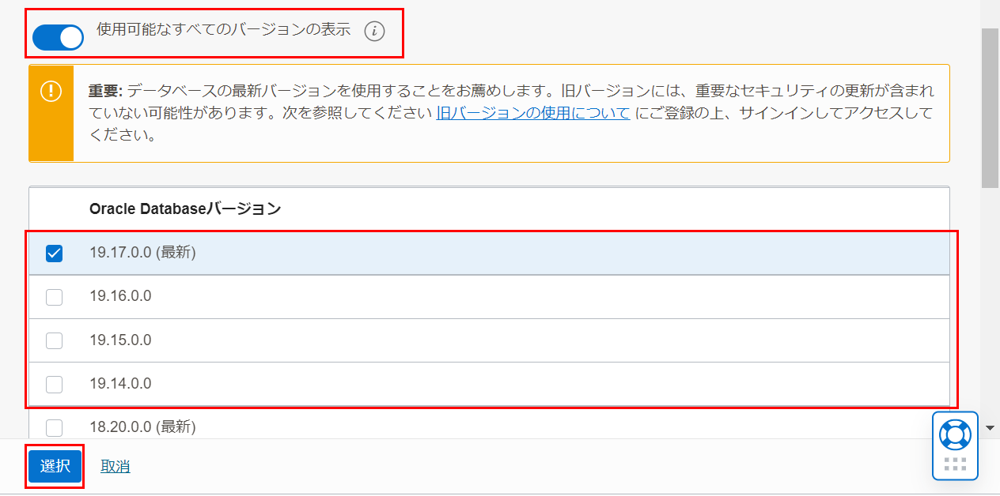
-
作成をクリックします。
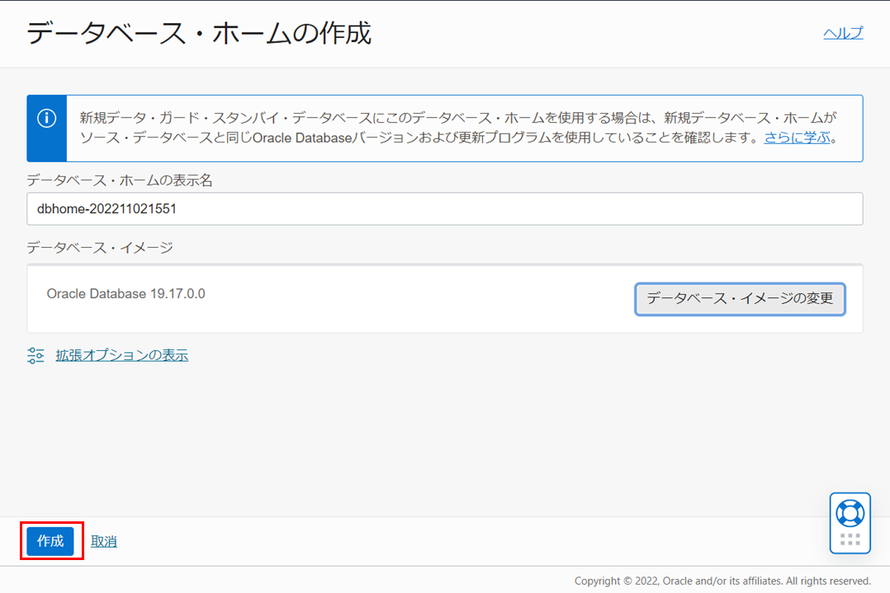
データベース・ホームの状態がPROVISIONINGからAVAILABLEに変更されたら完了です。
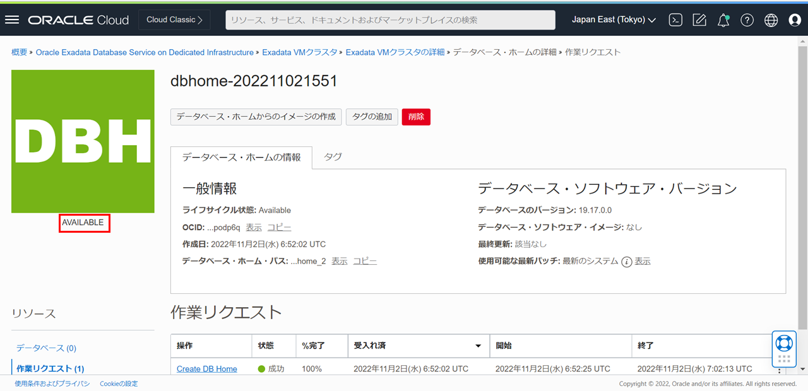
2. カスタム・イメージを使用したデータベース・ホームの作成
カスタム・イメージの作成
-
OCIコンソール・メニューから Oracle Database → Oracle Public Cloud上のExadata に移動します。
-
リソースの一覧からデータベース・ソフトウェア・イメージをクリックします。
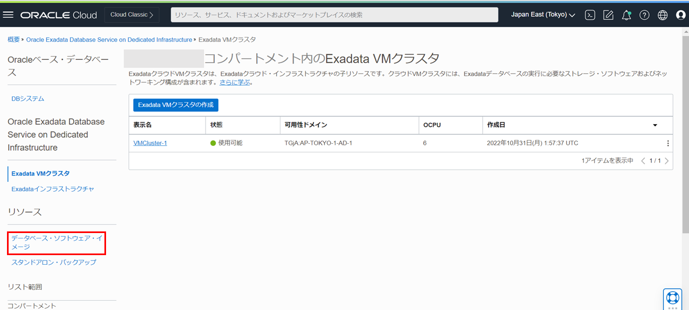
-
データベース・ソフトウェア・イメージの作成をクリックします。
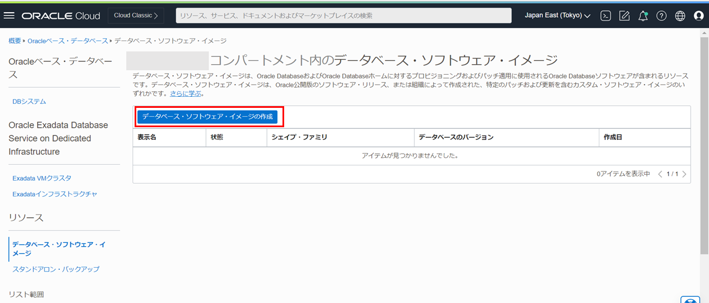
-
データベース・ソフトウェア・イメージの作成ダイアログの各項目は以下のように設定します。
- データベース・ソフトウェア・イメージの基本情報の指定
- 表示名 - 任意の名前を入力します。
- コンパートメントの選択 - 利用したいコンパートメントを選択します。
- シェイプ・ファミリ - Exadataシェイプを選択します。
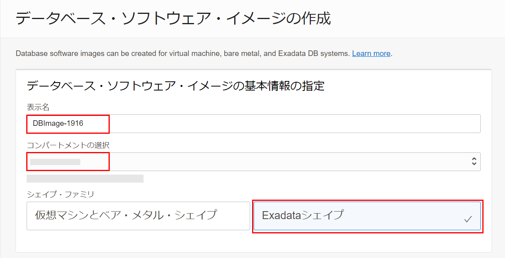
- データベース・ソフトウェア・イメージの構成
- データベースのバージョン - 利用したいデータベースのバージョンを選択します。
- パッチ・セット更新、プロアクティブ・バンドル・パッチまたはリリース更新を選択します - 利用したいソフトウェア更新を選択します。
- 個別パッチ番号を入力します - 適用したい個別パッチの番号を入力します。（こちらはオプションです。）
- Oracleホーム・インベントリのアップロード - ホーム・インベントリのファイルをアップロードします。ホーム・インベントリのアップロードについての説明はOracleホームに適用されたパッチを検証するためのOPatch lsinventoryコマンドの使用をご参照ください。（こちらはオプションです。）
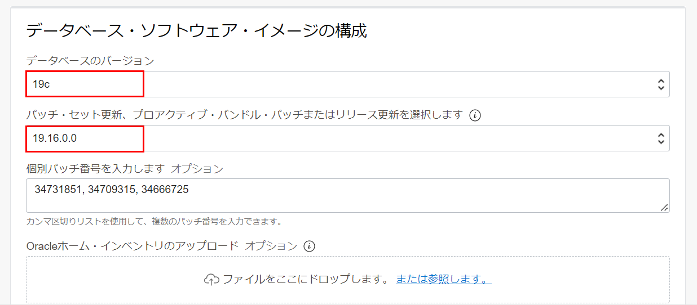
設定後、データベース・ソフトウェア・イメージの作成をクリックします。
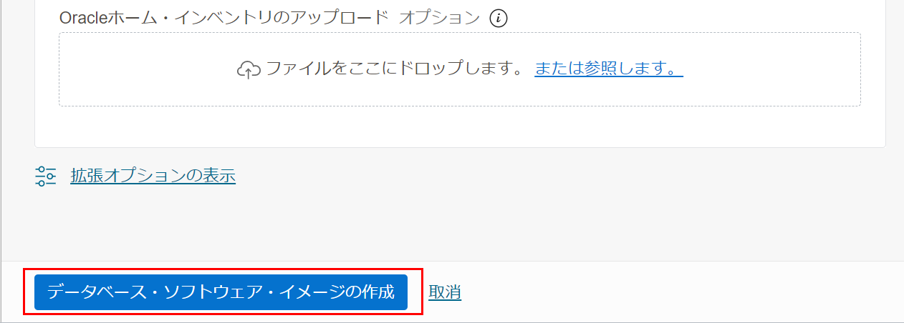
データベース・ソフトウェア・イメージの状態がPROVISIONINGからAVAILABLEに変更されたら完了です。
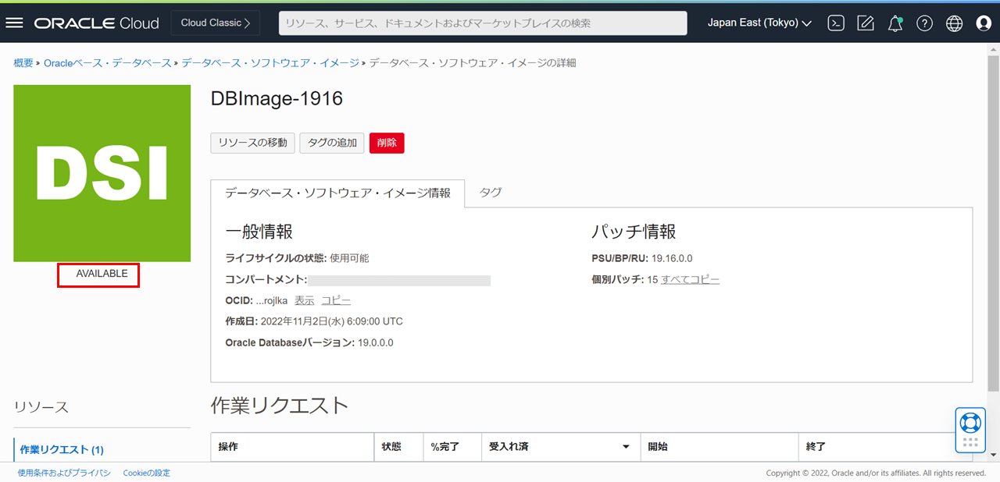
- データベース・ソフトウェア・イメージの基本情報の指定
データベース・ホームの作成
-
1. データベース・ホームの作成の5.までの手順に従って、同様の操作を実行します。
- データベース・ソフトウェア・イメージの選択ダイアログの各項目は以下のように設定します。
- イメージ・タイプ - カスタム・データベース・ソフトウェア・イメージを選択します。
- コンパートメントの選択 - 利用したいコンパートメントを選択します。
- データベース・バージョンの選択 - 利用したいデータベースのバージョンを選択します。
カスタム・イメージの作成で作成したカスタム・イメージにチェックを付けます。
設定後、選択をクリックします。
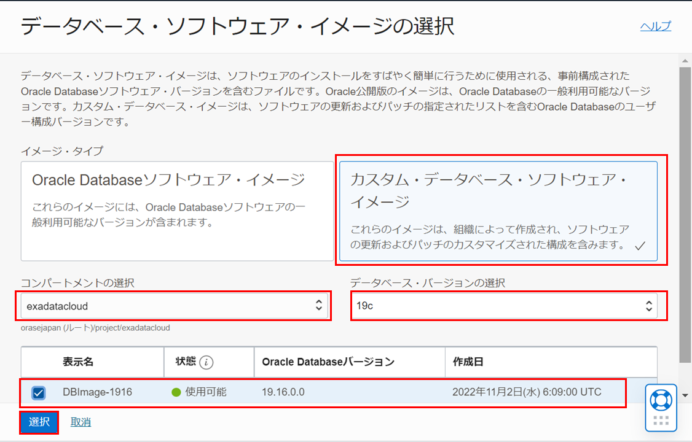
-
作成をクリックします。
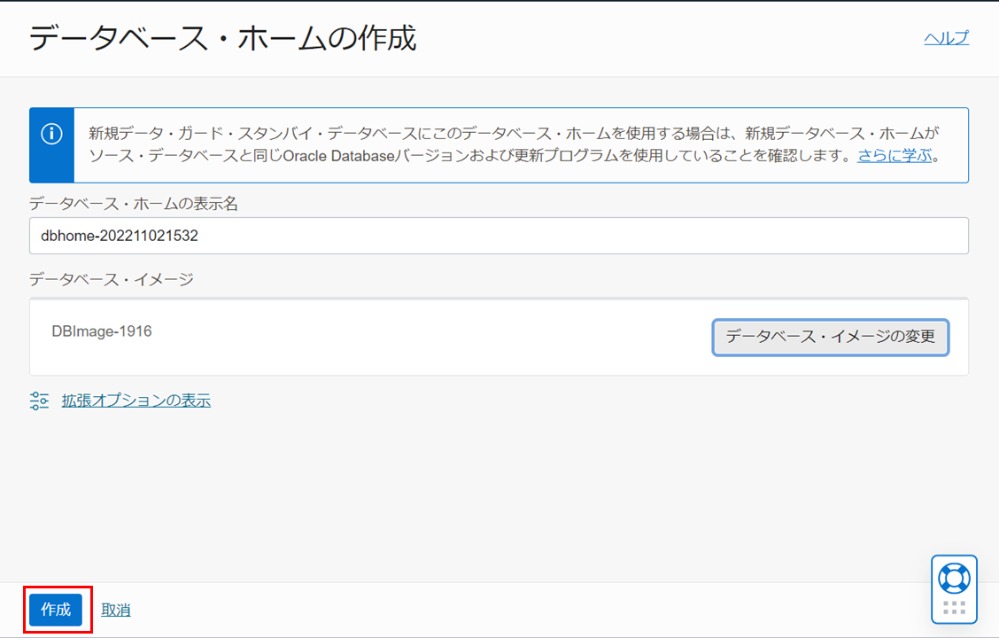
データベース・ホームの状態がPROVISIONINGからAVAILABLEに変更されたら完了です。
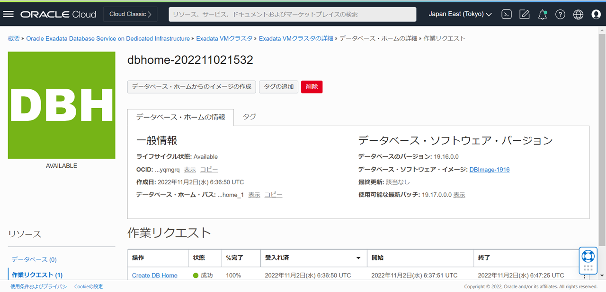
3. 確認作業
1. データベース・ホームの作成と2. カスタム・イメージを使用したデータベース・ホームの作成で作成したデータベース・ホームがデータベースの作成の設定画面で選択できるようになっていることを確認します。
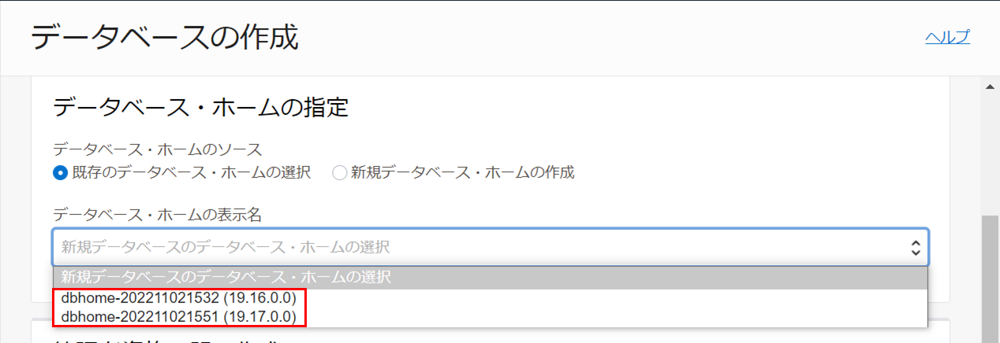
以上で この章の作業は完了です。
参考資料
- Oracle Cloud Infrastructure Documentation - Oracle Exadata Database Service on Dedicated Infrastructure
- Oracle Cloud Infrastructure Exadata Database Service on Dedicated Infrastructure (ExaDB-D) サービス詳細